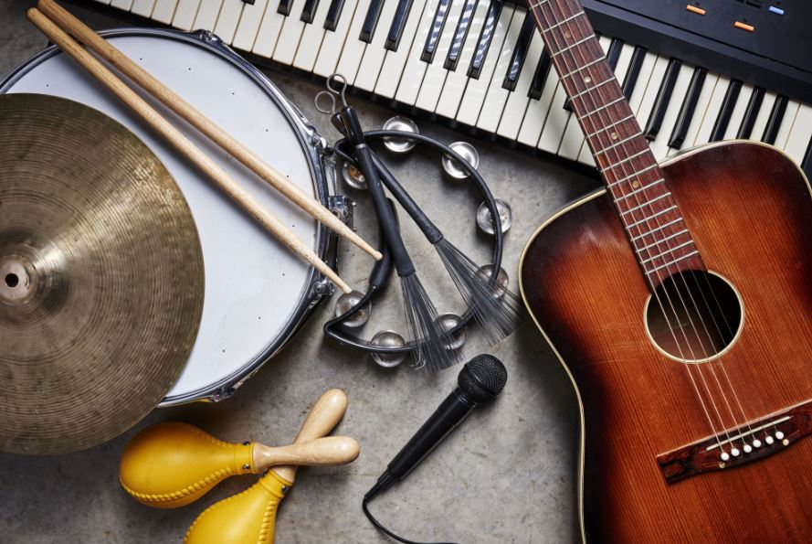

Discover New Activities!
Below you will be able to discover new Activities. These have been choosen since they could be calming and fun! You can find many Activities,a great activity for your knowledge, and to boost your creativity and thinking, is ready.
HERE
reading is awesome it helps your understanding and books range from reality to fantasy, libaries are a great way to discover new books, and engage in the literature world! This image belongs to, hastac.org, you can check out their websites, for great learning help and tips.

Another popular activity you may like are board games, a popular board game is monopoloy, board games are great because it allows you to work together as a team with others, and they can also be great fun. Owner of the image used above is, Arstechnica. linked over HERE is a website that you can purchase board games.
A fun a musical activity is learning a new instrument. Listening to music can boost your happiness and can be can be calming, there are lots of different instruments you can try, such as the violin, or the piano. This image belongs to Pmr Press Release
<HERE